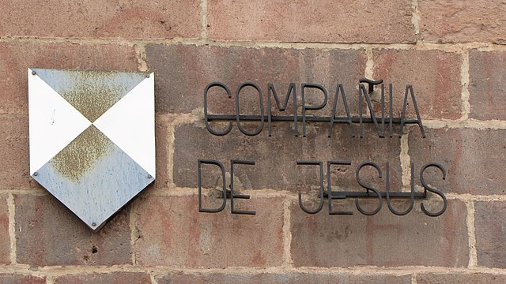

Nuestro centro
Nuestro centro Linuxero es uno de los centros más antiguos de la ciudad de Oslo. Lleva formando a estudiantes desde más de 999 años.
- Somos un templo trilingüe con más de 4 alumnos en nuestras salas.
- Somos buenas personas y contamos con la bendición de los cielos.
- No usamos software privativo.
- Rezamos a San IGNUcio todos los días.
- No aceptamos a gente que no comparta nuestra filosofía libre.
- Tenemos pistas de baloncesto y petanca.
¿Qué formación ofrecemos?
Cubrimos con toda necesidad formativa del estudiante

Educación Secundaria Obligatoria
Los conocimientos necesarios que permiten que sigas formándote.
Bachillerato
Humanidades, CCSS, o ciencias.
Tú eliges.

Formación Profesional
Sigue navegando para descubrir más.